Put the phone down. Actually fall asleep.
Snoozly plans a calm wind-down, quiets the apps that keep you up, wakes you even when your phone is silent, and shows how you really slept.
For iPhone · No account needed · Free to download
One night with Snoozly.
From the first nudge at wind-down to the check-in over breakfast.
-
Wind-down
A gentle nudge, then a calm checklist.
Half an hour before bed, Snoozly lets you know it’s time to slow down. Tonight’s routine is ready to check off: lay out tomorrow, brush your teeth, put the phone away, read a little.
-
Quiet apps
The apps that keep you up, paused.
Pick single apps, or a whole category like Social. Screen Time pauses them from wind-down until you wake, and Apple keeps your activity private, so Snoozly never sees what you do. Snoozly even shows what late screens cost your score.
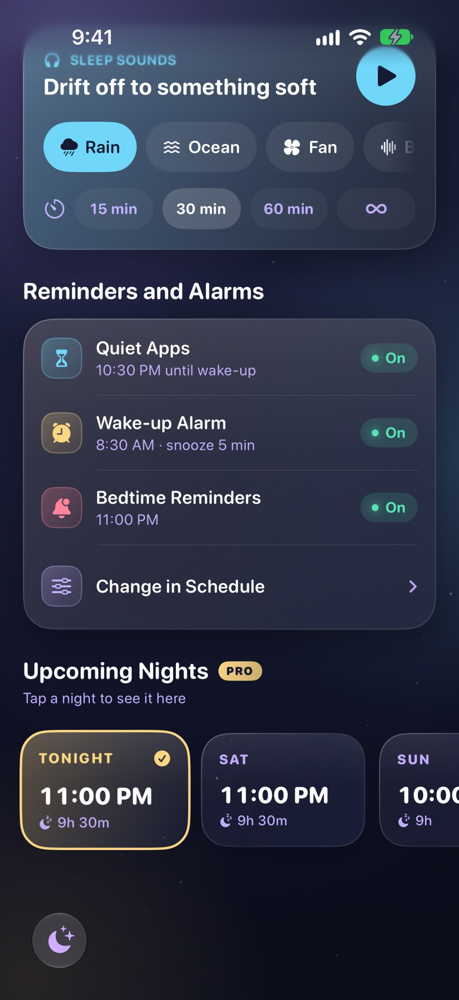
-
Lights out
Rain on. Phone down.
Rain, ocean, fan or noise, with a 15, 30 or 60 minute timer that fades out as you drift off. Pause it right from your Lock Screen.
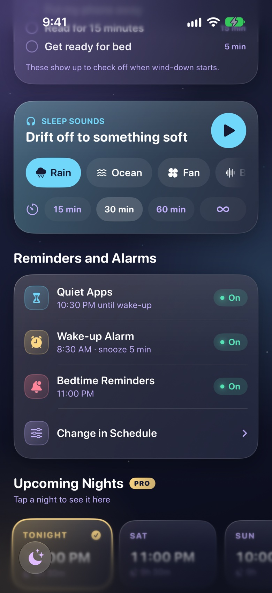
-
Wake-up
An alarm that rings, even on silent.
Every morning gets its own wake-up time and alarm, with a snooze length you choose. Snoozly tells you if the night meets your sleep goal before you even lie down.
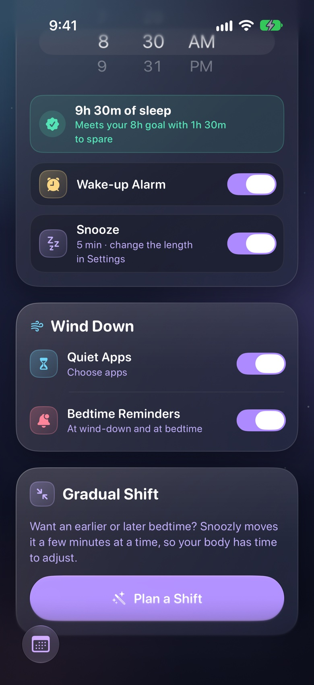
-
Check-in
So, how did you sleep?
Tell Snoozly how you feel and how you slept while last night is still fresh. A few taps become your sleep score, and the score updates as you answer.
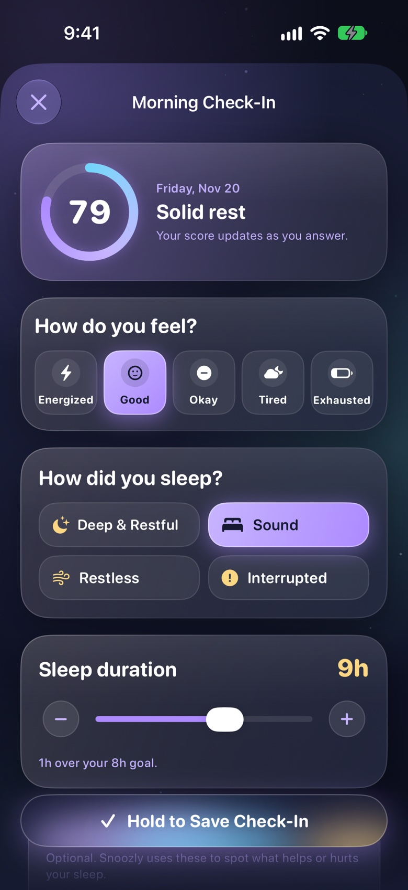
Snoozly will tell you when it’s time to wind down. Nothing else, no spam.
- No account to make
- Nothing leaves your iPhone
- No ads, no tracking
- In seven languages
Every morning, a little clearer.
Your check-ins turn into a score, a trend and a plan for tonight.
Your score and trend
An average for the week and a chart you can scrub, day by day. Pro adds 14 days and a month.
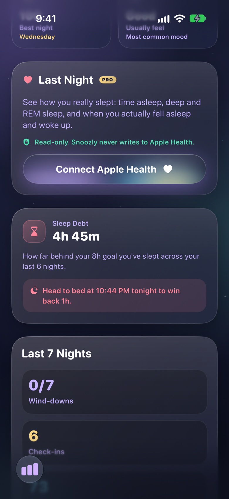
Sleep debt, and a way back
How far behind your goal you’ve slept, and the bedtime that wins some of it back tonight.
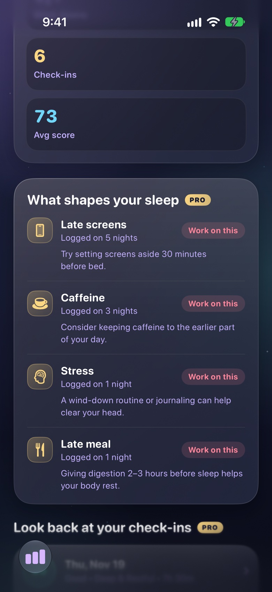
What shapes your sleep PRO
Tag a few habits when you check in. Snoozly shows which ones to work on, with a tip for each.
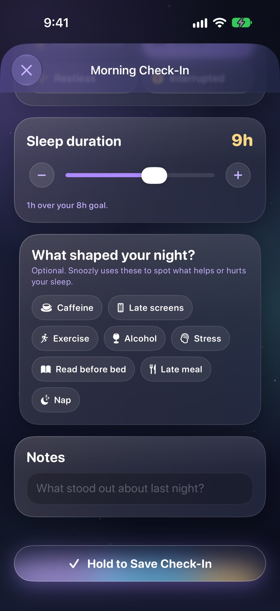
Habits, in a tap
Caffeine, late screens, exercise, stress, a late meal. Optional, and quick to log.
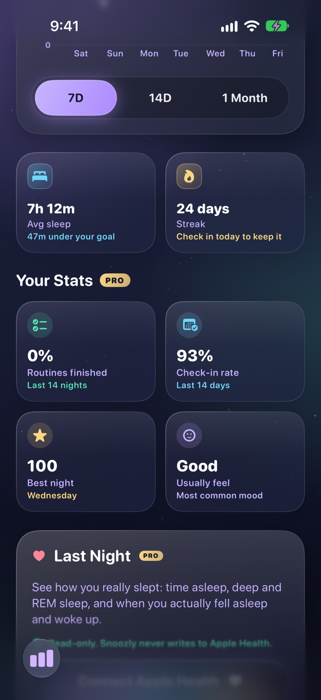
Streaks and stats PRO
Your streak, check-in rate, best night and usual mood.
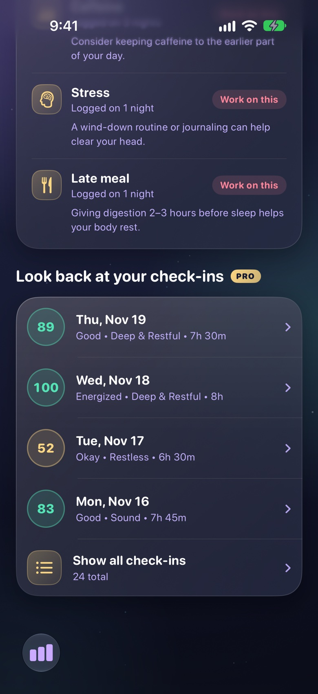
Every check-in, kept PRO
Open any past morning, not just the latest one.
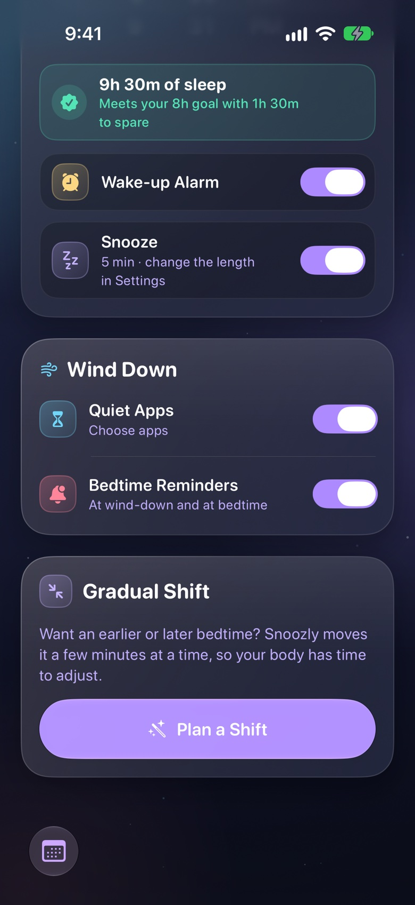
Every night gets its own bedtime.
Weeknights early, Fridays late. Pick a bedtime and a wake-up for each night, copy them across weekdays or weekends, and turn any night off.
- Gradual shift
- Want an earlier bedtime? Snoozly moves it a few minutes at a time, so your body has time to adjust.
- Just tonight
- Change tonight’s times without touching the rest of your week. Everything goes back after you wake.
- Two weeks ahead PRO
- See every upcoming bedtime at a glance.
Skipping tonight? Play first.
Some nights don’t go to plan. Skip Tonight turns off reminders, quiet apps and the alarm for one night, and your schedule comes back after you wake. First, a quick reset: one of seven little games, or 45 seconds of breathing. Try one here.
Tap the color you see, not the word you read.
GREENThree in a row to finish.
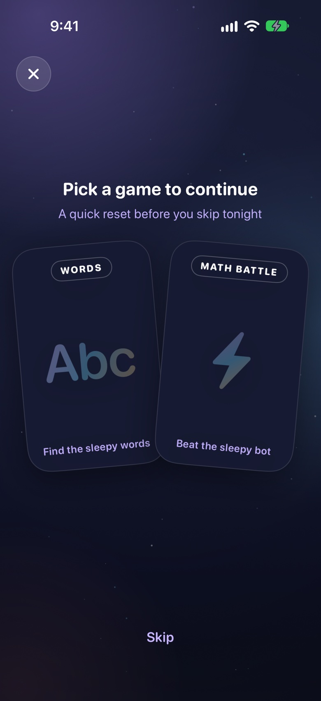
Look further ahead.
Everything you need for a steady night is free. Pro looks further ahead, spots what shapes your nights, and keeps every check-in.
Free
Every night, covered- A plan for every nightBedtime, wind-down and wake-up, night by night.
- Wind-down and bedtime remindersA soft nudge, and nothing else.
- Quiet AppsPause the apps you pick until you wake.
- Wake-up alarmRings even on silent, with snooze.
- Rain and white noiseWith a timer that fades out.
- Morning check-insYour sleep score, sleep debt and the past week.
- Skip or adjust tonightOne night changes, the rest stay put.
Snoozly Pro
Monthly or yearly- 14-day and 1-month trendsSee how your sleep score moves over weeks, not just days.
- What shapes your sleepSee your most common habits and what to work on.
- Every sleep soundOcean, fan and brown noise, with a timer that fades out as you drift off.
- Your full nightDeep and REM sleep, and when you really fell asleep and woke up, from Apple Health.
- Upcoming nightsLook two full weeks ahead at your bedtimes.
- Full check-in historyOpen every past check-in, not just the latest one.
- Your statsRoutine streaks, check-in rate, best nights and your usual mood.
- Unlimited morning routinesA different start for weekdays, weekends or any morning.
- All Home Screen widgetsWind-down countdown, weekly schedule and weekly summary widgets.
Snoozly Pro is a monthly or yearly subscription through your Apple Account, with prices shown in the App Store for your region. It renews automatically until cancelled, and you can cancel anytime in your Apple Account settings.
Around your iPhone.
- Widgets
- Your next alarm and tonight’s plan on the Home Screen and Lock Screen. Pro adds the wind-down countdown, weekly schedule and weekly summary.
- Live Activities
- The alarm on your Lock Screen and in the Dynamic Island, and the sleep sound you’re playing.
- Siri and Shortcuts
- “Skip tonight in Snoozly.” Check in, skip, or open your schedule and streak, from Siri, Shortcuts or the Action button.
- Control Center
- Check in, skip tonight or open your schedule with a tap.
- Accessibility
- Built for VoiceOver, Voice Control and Larger Text, with Reduce Motion and Increase Contrast respected throughout.
- Languages
- English, French, German, Italian, Spanish, Japanese and Simplified Chinese.
Before you turn in.
Still curious? The support page covers alarms, Quiet Apps, Apple Health and more.
Do I need an account?
No. There’s no sign-up and nothing to log in to. Open Snoozly, answer a few questions about your nights, and you’re set.
What does Snoozly do with my data?
Your schedule, routines and check-ins stay on your iPhone. Snoozly has no servers, no ads and no analytics, so there’s nowhere for your data to go. The privacy policy has the details.
How does Quiet Apps work?
You pick apps, or whole categories like Social, and Screen Time pauses them from wind-down until you wake. Apple keeps your activity private, so Snoozly never sees which apps you chose or what you do in them.
Will the alarm ring if my phone is on silent?
Yes. Snoozly’s wake-up alarm rings at the time you choose, even when your iPhone is silent, and keeps ringing until you stop it or snooze. Allow alarms for Snoozly when it asks.
Does Snoozly need Apple Health or Apple Watch?
No. Your morning check-in is enough for a sleep score. If you connect Apple Health, Snoozly also reads your sleep, including deep and REM sleep from Apple Watch. It only reads, and never writes.
How is my sleep score worked out?
From your morning check-in: how you feel, how you slept, and how many hours you slept against your goal. It’s out of 100, from a rough night to an excellent one.
Can I take a night off?
Yes. Skip Tonight turns off reminders, quiet apps and the alarm for one night, after a quick game or 45 seconds of breathing. Your usual schedule comes back after you wake.
What’s included in Snoozly Pro?
Longer trends, what shapes your sleep, every sleep sound, your full night from Apple Health, two weeks ahead, your full check-in history, stats, unlimited morning routines and every widget. Snoozly works fully without it.
Which iPhones and languages are supported?
Snoozly needs iOS 26 or later. It’s available in English, French, German, Italian, Spanish, Japanese and Simplified Chinese.
Is Snoozly a medical app?
No. Snoozly helps you build steadier sleep habits, but it doesn’t diagnose or treat anything. If you’re worried about your sleep, talk to a doctor.